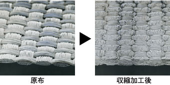
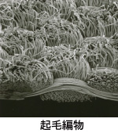
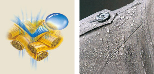

「テクノフィット」は原糸開発から織編・加工までの一貫生産体制により、時代の変化に対応することで進化してきたマイクロファイバー「ベリーマ®X」を使用した織編物です。独自技術である高収縮・高密度加工により従来にはないソフトな風合いを備え多様なファッションシーンに対応いたします。
「テクノフィット」は、KBセーレンが独自開発した分割型ウルトラマイクロファイバーに超高収縮高密度加工を施したもの。超極細繊維、超高収縮高密度織編物ならではの軽くてソフトな風合い。ラミネートやコーティングなどの加工では得られない、生地本来のナチュラルな感触や適度なドレープ性も魅力です。

素材の表情は、毛1本1本の太さと長さ、立毛密度によりまったく異なる外観となります。「テクノフィット」のバリエーション豊かな表情も、超極細繊維、超高収縮高密度織編物ならではのもの。スエード調、ヌバック調、ピーチフェイス調と、素材ごとに適切なサンディング加工を施し、豊かな表面効果を実現しています。

繊維のすき間は、雨滴より小さく、汗の水蒸気より大きくなっています。このため、雨を通しにくく、汗をかいてもムレのない快適な着心地です。ラミネートやコーティング加工ではなく、素材の構造自体が透湿防水性を持っているため、フィルムのはく離などによる性能劣化がありません。

ＫＢセーレン株式会社
衣料資材販売部
kbs.info@kb.seiren.com